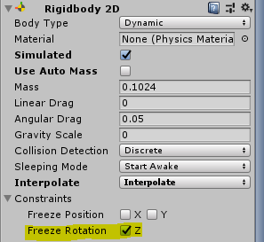

備忘録的な奴
Unityチュートリアル集
Unityチュートリアル凄い...
チュートリアル2Dシューティング
マップの実装とキャラ，移動の実装
マップチップとキャラチップを使用してマップチップを表示する。
TileMapという機能とキャラのアニメーションにはSimpleAnimationが使いやすいみたい。
マップチップ/キャラチップ
ドット絵世界
ぴぽやブログ
TileMapとSimpleAnimation
【Unity】タイルマップの基本的な使い方
SinpleAnimation
SimpleAnimation導入時にコンパイルエラーSimpleAnimation_impl.csの, IAnimationClipSourceを消したら直った。
マップとキャラの衝突検知はマップとキャラ両方のコリジョンの設定が必要。
とりあえず、キャラが歩いて壁にぶつかるようになった。
でもなんかバグる時がある...
小物素材系
素材屋Rosa
Rigidbody2D 転び対策。

オブジェクトの回転について。オイラー角、クォータニオン変換(重要)